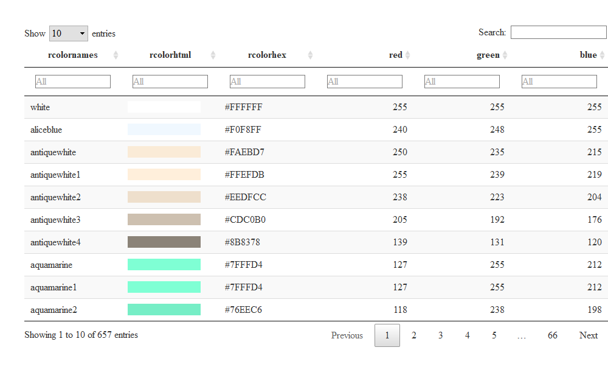
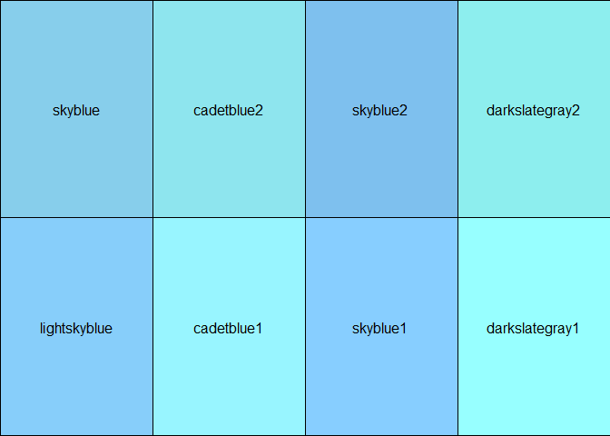
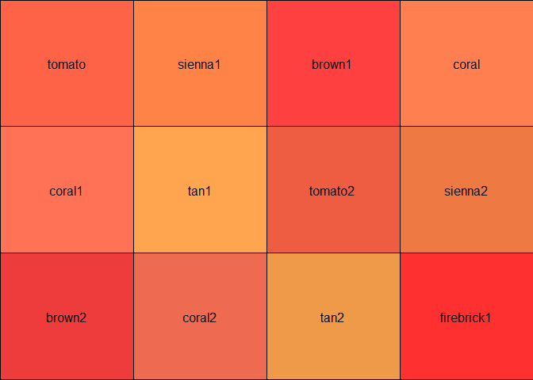
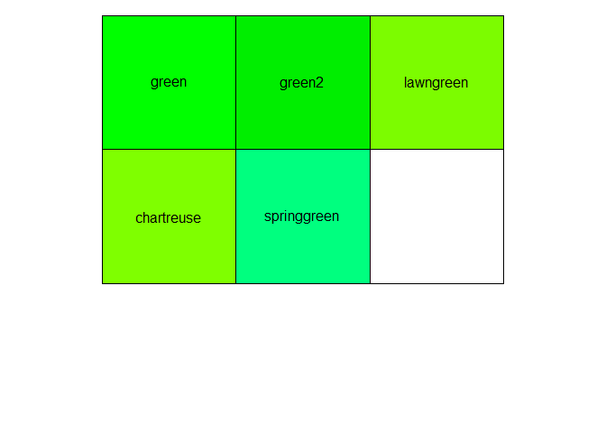
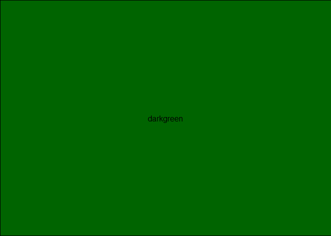
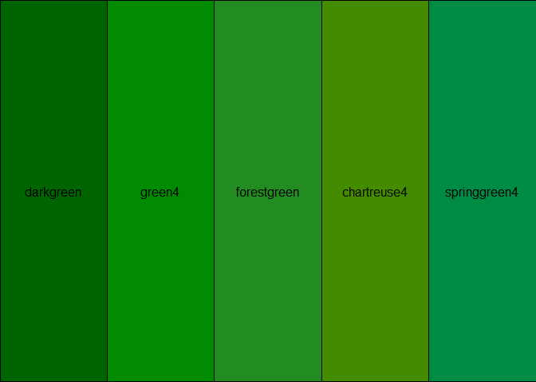

This package is designed to help you work with R’s built-in colors.
rcolorutils isn’t on CRAN, so you’ll need to install it with from GitHub with:
# install.packages("devtools") devtools::install_github("smach/rcolorutils", build_vignettes = TRUE)
You can generate a searchable table with all colors with the create_color_table() function. The function’s only argument is the length of the table page, which defaults to 25.
With columns for red, green, and blue, you can sort and filter the table by rgb color attributes as well as color name or hex code.
library(rcolorutils) create_color_table(page_length = 10)

rcolorutils also has functions to help you find built-in colors that are similar to one specific color. It’s especially useful to answer a question like “what other blues are built in to R”?
The nearRcolor() function will return a vector of nearby colors:
nearRcolor("skyblue") #> 0.0000 0.0412 0.0507 0.0529 #> "skyblue" "cadetblue2" "skyblue2" "darkslategray2" #> 0.0699 0.0875 0.0926 0.0938 #> "lightskyblue" "cadetblue1" "skyblue1" "darkslategray1"
nearRcolor("tomato") #> 0.0000 0.0281 0.0374 0.0403 0.0589 0.0643 #> "tomato" "sienna1" "brown1" "coral" "coral1" "tan1" #> 0.0667 0.0723 0.0776 0.0882 0.0918 0.0937 #> "tomato2" "sienna2" "brown2" "coral2" "tan2" "firebrick1"
If you’d like to see the colors, wrap the results of nearRcolor() in the plotCol() function:
plotCol(nearRcolor("skyblue"), nrow = 2) #> Loading required package: grid

plotCol(nearRcolor("tomato"), nrow = 3)

Note that the scales package’s show_col() function is another way to display the colors:
scales::show_col(nearRcolor("green"))

If you don’t get enough colors, increase the distance.
plotCol(nearRcolor("darkgreen"))

You may have to fiddle with the distance number to get what you want.
plotCol(nearRcolor("darkgreen", "rgb", dist = 80))
